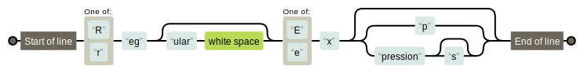

<style>
    .reveal table { margin-bottom: 1em; }
    .reveal table th { text-align: right; padding: 0 1em 0.5em 0; }
    .reveal table td { text-align: left; padding-bottom: 0.5em; }
</style>


<section data-background='#ffffff'>
    <h2 style='text-transform: none; font-size: 1.6em; margin-bottom: 1em;'>
        /^[Rr]eg(ular\s)?[Ee]x(p|pressions?)?$/
    </h2>
    

    <cite style='bottom: -10em;'>
        <a href='https://regexper.com/#%2F%5E%5BRr%5Deg%28ular%5Cs%29%3F%5BEe%5Dx%28p%7Cpressions%3F%29%3F%24%2F'>regexper.com</a>
    </cite>
</section>


<section data-background='white'>
    <br>
    <p style='margin-top: 1em' contenteditable autocorrect='off' spellcheck='false'>Jordan Kasper | <a href='https://jordankasper.com'>@jakerella</a></p>
</section>


<section>
    <ol>
        <li>What are they?</li>
        <li class='fragment'>Common Elements</li>
        <li class='fragment'>Special Characters</li>
        <li class='fragment'>Grouping, Shorthands, and Efficiency</li>
    </ol>
</section>


<section data-background='images/rubber-duck.jpg'>
    <h1 style='text-shadow: 4px 4px 0 #000; color: #fff; font-size: 3em; font-weight: bold; text-transform: none; margin: 2em 0 0 2em;'>wut</h1>
    <cite style='bottom: -11em;'>www.thebigduck.us</cite>
</section>


<section>
    <h2>String Pattern Matchers</h2>

    <ul>
        <li class='fragment'>Test a string against a pattern (true/false)</li>
        <li class='fragment'>Match specific data in a string</li>
        <li class='fragment'>Often used for data/input validation</li>
        <li class='fragment'>Can efficiently find data in large text (e.g. log files)</li>
        <li class='fragment'>
            Sometimes used to find and replace specific text<br>
            (e.g. change all instances of "admin" to "jordan")
        </li>
    </ul>
</section>


<section data-transition='none' data-background='#ffffff'>
    <h2>What Language?</h2>

    <h3>&nbsp;</h3>
</section>


<section data-transition='none' data-background='#ffffff'>
    <h2><del>What Language?</del></h2>

    <h3>What Engine?</h3>
</section>


<section>
    <h2>Regex Engines</h2>

    <aside class='fragment'>
        <table>
            <tbody>
                <tr>
                    <th>PCRE</th>
                    <td>Apache, Nginx, PHP, Erlang, Elixir</td>
                </tr>
                <tr class='fragment'>
                    <th>POSIX (BRE/ERE)</th>
                    <td>grep, sed, MySQL, Oracle, R*</td>
                </tr>
                <tr class='fragment'>
                    <th>Oniguruma</th>
                    <td>Ruby, Atom, Sublime, jq</td>
                </tr>
                <tr class='fragment'>
                    <th>Irregexp</th>
                    <td>Node.js, Chrome, Firefox</td>
                </tr>
                <tr class='fragment'>
                    <th>Standard libs</th>
                    <td>Java*, Perl, Python*, Rust, .NET</td>
                </tr>
            </tbody>
        </table>
    </aside>

    <aside class='fine'>
        <p class='fragment'>
            * Many languages have multiple engines available via libraries 
            (e.g. Java's standard lib versus JRegex).
        </p>
        <p class='fragment'>
            ** Also, not all features are supported in a language, even if 
            they are supported by the engine!
        </p>
    </aside>

    <p class='fine' style='font-size: 0.8em; margin-top: 2em;'>https://en.wikipedia.org/wiki/Comparison_of_regular_expression_engines</p>
</section>


<section>
    <h2>What do they look like?</h2>

    <pre><code class='no-highlight'>/the regex goes in here/</code></pre>

    <pre class='fragment'><code class='no-highlight'>`the regex goes in here`</code></pre>

    <pre class='fragment'><code class='no-highlight'>"the regex goes in here"</code></pre>

    <pre class='fragment'><code class='no-highlight'>"/the regex goes in here/"</code></pre>
</section>


<section>
    <h2>Language-Specific</h2>

    <table>
        <tbody>
            <tr>
                <th>JavaScript</th>
                <td>
                    <pre><code class='lang-javascript'>/foo/.test("foobar")</code></pre>
                </td>
            </tr>
            <tr class='fragment'>
                <th>PHP</th>
                <td>
                    <pre><code class='lang-php'>preg_match("/foo/", "foobar");</code></pre>
                </td>
            </tr>
            <tr class='fragment'>
                <th>Ruby</th>
                <td>
                    <pre><code class='lang-ruby'>/foo/ =~ "foobar"</code></pre>
                </td>
            </tr>
            <tr class='fragment'>
                <th>Perl</th>
                <td>
                    <pre><code class='lang-perl'>"foobar" =~ /foo/</code></pre>
                </td>
            </tr>
        </tbody>
    </table>
</section>


<section>
    <h2>Common Elements</h2>
    <p>(Using JavaScript syntax)</p>
</section>


<section>
    <h2>Simple Character Test</h2>

    <pre><code class='lang-javascript'>/a/.test("JavaScript Rules")   // true</code></pre>

    <pre class='fragment'><code class='lang-javascript'>/z/.test("JavaScript Rules")   // false</code></pre>
</section>


<section>
    <h2>Testing versus Matching</h2>

    <p><strong>true/false</strong> vs. <strong>matched groups</strong></p>

    <pre class='fragment'><code class='lang-javascript' data-trim>
/a/.test("JavaScript Rules")   // true
"JavaScript Rules".match(/a/)  // ["a"]
    </code></pre>

    <pre class='fragment'><code class='lang-javascript' data-trim>
"JavaScript Rules".match(/z/)  // null
    </code></pre>
</section>


<section>
    <h2>Where's the other "<span style='text-transform: lowercase; font-family: Consolas, monospace;'>a</span>"?</h2>

    <pre><code class='lang-javascript' data-trim>
"JavaScript Rules".match(/a/)   // ["a"]
    </code></pre>

    <aside class='fragment'>
        <p>We need to make it global!</p>

        <pre><code class='lang-javascript' data-trim>
"JavaScript Rules".match(/a/g)  // ["a", "a"]
        </code></pre>

        <p class='fragment'>The "g" here is called a "flag".</p>
    </aside>
</section>


<section>
    <h2>Case Sensitivity</h2>

    <pre><code class='lang-javascript' data-trim>
"JavaScript Rules".match(/r/)    // ["r"]
    </code><code class='fragment lang-javascript' data-trim>
// make it global
"JavaScript Rules".match(/r/g)   // ["r"]
    </code><code class='fragment lang-javascript' data-trim>
// make it case-insensitive AND global
"JavaScript Rules".match(/r/ig)  // ["r", "R"]
    </code></pre>
</section>


<section>
    <h2>Multiple Characters</h2>

    <pre class='fragment'><code class='lang-javascript' data-trim>
/script/i.test("JavaScript Rules")   // true

"JavaScript Rules".match(/script/i)  // ["Script"]
    </code></pre>
</section>


<section>
    <h2>Special Characters</h2>
</section>


<section>
    <h2>Match Any Character</h2>

    <pre><code class='lang-javascript' data-trim>
/jordan/i.test("Jordan")   // true
    </code></pre>

    <pre class='fragment'><code class='lang-javascript' data-trim>
/jord.n/i.test("Jordan")   // true
/jord.n/i.test("Jordon")   // true
/jord.n/i.test("Jordyn")   // true
    </code></pre>

    <aside class='fragment'>
        <p>The "." does NOT match newline (or carriage return)!</p>

        <pre class='fragment'><code class='lang-javascript' data-trim>
"foo\nbar".match(/./g)  // ["f", "o", "o", "b", "a", "r"]

"foo\tbar".match(/./g)  // ["f", "o", "o", "\t", "b", "a", "r"]
    </code></pre>
    </aside>
</section>


<section>
    <h2>Classes, Ranges, and Repetition</h2>
    <p><code>[ ]</code>, <code>+</code>, <code>{ }</code></p>

    <pre><code class='lang-javascript' data-trim>
"c52a93".match(/c52a93/)               // ["c52a93"]
    </code><code class='fragment lang-javascript' data-trim>
"b5d055".match(/c52a93/)               // null
    </code><code class='fragment lang-javascript' data-trim>
"c52a93".match(/[0123456789abcdef]/)   // ["c"]
    </code><code class='fragment lang-javascript' data-trim>
"c52a93".match(/[0123456789abcdef]+/)  // ["c52a93"]
    </code><code class='fragment lang-javascript' data-trim>
"c52a93".match(/[0-9a-f]+/)            // ["c52a93"]
    </code><code class='fragment lang-javascript' data-trim>
"c52a9300".match(/[0-9a-f]+/)          // ["c52a9300"]
    </code><code class='fragment lang-javascript' data-trim>
"c52a9300".match(/[0-9a-f]{6}/)        // ["c52a93"]
    </code><code class='fragment lang-javascript' data-trim>
"c52a9300".match(/[0-9a-f]{6,8}/)      // ["c52a9300"]
    </code></pre>
</section>


<section>
    <h2>Making Something Optional</h2>
    <p><code>?</code></p>

    <pre><code class='lang-javascript' data-trim>
"#c52a93".match(/[0-9a-f]{6,8}/)   // ["c52a93"]
    </code><code class='fragment lang-javascript' data-trim>
"#c52a93".match(/#[0-9a-f]{6,8}/)  // ["c52a93"]
    </code><code class='fragment lang-javascript' data-trim>
"c52a93".match(/#[0-9a-f]{6,8}/)   // null
    </code><code class='fragment lang-javascript' data-trim>
"c52a93".match(/#?[0-9a-f]{6,8}/)  // ["c52a93"]
    </code></pre>
</section>


<section>
    <h2>Zero or More</h2>
    <p><code>*</code></p>

    <pre><code class='lang-javascript' data-trim>
"value='c52a93'".match(/value='[0-9a-f]+'/)  // ["value='c52a93'"]
    </code><code class='fragment lang-javascript' data-trim>
"value=''".match(/value='[0-9a-f]+'/)        // null
    </code><code class='fragment lang-javascript' data-trim>
"value=''".match(/value='[0-9a-f]*'/)        // ["value=''"]
    </code></pre>
</section>


<section>
    <h2>Negation</h2>
    <p><code>[^]</code></p>

    <pre><code class='lang-javascript' data-trim>
"jordan kasper".match(/[a-z]+/g)     // ["jordan", "kasper"]
    </code><code class='fragment lang-javascript' data-trim>
"jordan o'moran".match(/[a-z]+/g)    // ["jordan", "o", "moran"]
    </code><code class='fragment lang-javascript' data-trim>
"jordan o'moran".match(/[^ ]+/g)     // ["jordan", "o'moran"]
    </code></pre>
</section>


<section data-transition='none'>
    <h2>Greediness and Laziness</h2>

    <p>RegEx likes to eat up characters, so be careful!</p>

    <pre class='fragment'><code class='lang-javascript' data-trim>
"&lt;p class='foo' id='bar'>".match(/[a-z]+='.+'/g)
                            // ["class='foo' id='bar'"]
    </code></pre>

    <p class='fragment'>The <code>+</code> is greedy: keeps going until repeated token stops.</p>
    <p class='fragment'><code>.</code> is the token, which matches everything...</p>
    <p class='fragment'>it matches the "f" in "foo", then "o" and "o"</p>
    <p class='fragment'>then matches the single quote after "foo" and keeps going!</p>
</section>


<section data-transition='none'>
    <h2>Greediness and Laziness</h2>

    <p>We can make the <code>+</code> lazy!</p>

    <pre class='fragment'><code class='lang-javascript' data-trim>
"&lt;p class='foo' id='bar'>".match(/[a-z]+='.+?'/g)
                                    // ["class='foo'", "id='bar'"]
    </code></pre>

    <aside class='fragment'>
        <p>
            However, less efficient due to backtracking required...<br>
            instead, we can use negation:
        </p>

        <pre><code class='lang-javascript' data-trim>
"&lt;p class='foo' id='bar'>".match(/[a-z]+='[^']+'/g)
                                    // ["class='foo'", "id='bar'"]
        </code></pre>
    </aside>
</section>


<section>
    <h2>Escaping Characters</h2>
    
    <p>
        If you need to use the special characters as literals,<br>
        you need to escape them with a backslash: <code>\</code>
    </p>

    <pre class='fragment'><code class='lang-javascript' data-trim>
"567.99".match(/[0-9]+.[0-9]{2}/)   // ["567.99"]
        </code><code class='fragment lang-javascript' data-trim>
"567a99".match(/[0-9]+.[0-9]{2}/)   // ["567a99"]
        </code><code class='fragment lang-javascript' data-trim>
"567.99".match(/[0-9]+\.[0-9]{2}/)  // ["567.99"]
        </code><code class='fragment lang-javascript' data-trim>
"567a99".match(/[0-9]+\.[0-9]{2}/)  // null
    </code></pre>

</section>


<section>
    <h2>Grouping, Shorthands, and Efficiency</h2>
</section>


<section>
    <h2>Grouping and Alternation</h2>
    <p><code>( )</code> and <code>|</code></p>

    <pre><code class='lang-javascript' data-trim>
"1234 Main St.".match(/[0-9]+ [a-z]+ [a-z\.]+/i)
                          // ["1234 Main St."]
        </code><code class='fragment lang-javascript' data-trim>
"1234 Main St.".match(/([0-9]+) ([a-z]+) ([a-z\.]+)/i)
                          // ["1234", "Main", "St."]
        </code><code class='fragment lang-javascript' data-trim>
"1234 Main St.".match(/([0-9]+) ([a-z]+) (st|rd|ave)\.?/i)
                          // ["1234", "Main", "St"]
    </code></pre>
    
    <p class='fragment'>
        Your groups <em>may</em> include the entire matched string!
    </p>
    
    <pre class='fragment'><code class='lang-javascript' data-trim>
"1234 Main St.".match(/([0-9]+) ([a-z]+) (st|rd|ave)\.?/i)
                          // ["1234 Main St.", "1234", "Main", "St"]
    </code></pre>

</section>


<section>
    <h2>Grouping Efficiency</h2>
    <p>Caution: matched groups add processing time & memory!</p>

    <p class='fragment'>Use non-matching groups when possible: <code>(?:)</code></p>

    <pre class='fragment'><code class='lang-javascript' data-trim>
"1234 Main St.".match(/([0-9]+) ([a-z]+) (st|rd|ave)\.?/i)
                                        // ["1234", "Main", "St"]
    </code><code class='fragment lang-javascript' data-trim>
"1234 Main St.".match(/[0-9]+ ([a-z]+) (st|rd|ave)\.?/i)
                                        // ["Main", "St"]
    </code><code class='fragment lang-javascript' data-trim>
"1234 Main St.".match(/[0-9]+ ([a-z]+ (st|rd|ave)\.?)/i)
                                        // ["Main St.", "St"]
    </code><code class='fragment lang-javascript' data-trim>
"1234 Main St.".match(/[0-9]+ ([a-z]+ (?:st|rd|ave)\.?)/i)
                                        // ["Main St."]
    </code></pre>
</section>


<section>
    <h2>Match Replacement</h2>
    <p>Differs from language to language!</p>

    <pre class='fragment'><code class='lang-javascript' data-trim>
"I like {{fav}} the most".replace(/{{fav}}/, "dogs")
                                        // "I like dogs the most"
    </code><code class='fragment lang-javascript' data-trim>
const email = "jordan@jordankasper.com"
email.replace(/([a-z]+)@([a-z.]+)/i, "https://$2/users/$1")
                       // "https://jordankasper.com/users/jordan"
    </code></pre>
</section>

<section>
    <h2>Whitespace &amp; Shorthands</h2>

    <aside style='display:flex;'>
        <div class='fragment' style='flex:2;'>
            <strong>Whitespace:</strong>
            <blockquote>
                <p>Space: "<code> </code>"</p>
                <p>Tabs: <code>\t</code></p>
                <p>Newline: <code>\n</code></p>
                <p>Carriage return: <code>\r</code></p>
            </blockquote>
        </div>
        <div class='fragment' style='flex:3;'>
            <strong>Shorthands:</strong>
            <blockquote>
                <p>Whitespace: <code>\s</code></p>
                <p class='fragment'>Digits: <code>\d</code> (same as <code>[0-9]</code>)</p>
                <p class='fragment'>
                    Word characters: <code>\w</code><br>
                    (generally: <code>[A-Za-z0-9_]</code>)
                </p>
            </blockquote>
        </div>
    </aside>

    <p class='fragment'>
        You can <em>negate</em> these shorthands using a capital letter:<br>
        <code>\S</code>, <code>\D</code>, <code>\W</code><br>
        or by using a negation character class: <code>[^\s]</code>
    </p>
</section>

<section>
    <h2>Shorthand Example</h2>

    <pre><code class='lang-javascript' data-trim>
const users = [
    "jakerella      Jordan 42",
    "roro	Alex	999",
    "ZeeTwii Nick 13"
]
    </code></pre>

    <pre class='fragment'><code class='lang-javascript' data-trim>
users.forEach((user) => {
    console.log(  user.match(/(\w+)\s+(\w+)\s+(\d+)/)  )
})
// ["jakerella", "Jordan", "42"]
// ["roro", "Alex", "999"]
// ["ZeeTwii", "Nick", "13"]
    </code></pre>
</section>

<section>
    <h2>Anchors</h2>
    <p><code>^</code> and <code>$</code></p>

    <pre><code class='lang-javascript' data-trim>
const input = "576.99"
        </code><code class='fragment lang-javascript' data-trim>
/\d+\.\d{2}/.test(input)         // true
        </code><code class='fragment lang-javascript' data-trim>
/\d+\.\d{2}/.test("f00.00bar")   // true
        </code><code class='fragment lang-javascript' data-trim>
/^\d+\.\d{2}$/.test("f00.00bar") // false
        </code><code class='fragment lang-javascript' data-trim>
/^\d+\.\d{2}$/.test("576.99")    // true
    </code></pre>
</section>

<section>
    <h2>Anchors</h2>
    <p><code>^</code> and <code>$</code></p>

    <pre><code class='lang-text' data-trim>
jakerella      Jordan 42
roro	Alex	999
ZeeTwii Nick 13
    </code></pre>

    <pre class='fragment'><code class='lang-javascript' data-trim>
userFile.match(/\w+/)    // ["jakerella"]
        </code><code class='fragment lang-javascript' data-trim>
userFile.match(/\w+/g)   // ["jakerella", "Jordan", "42", "roro", ...]
        </code><code class='fragment lang-javascript' data-trim>
userFile.match(/^\w+/)   // ["jakerella"]
    </code></pre>

    <p class='fragment'>Enter the multiline flag: <code>m</code></p>

    <pre class='fragment'><code class='lang-javascript' data-trim>
userFile.match(/^\w+/gm) // ["jakerella", "roro", "ZeeTwii"]
    </code></pre>
</section>


<section>
    <h2>Efficiency Warnings</h2>

    <p>Watch out for:</p>

    <ul>
        <li class='fragment'>Too many groups (use non-matching)</li>
        <li class='fragment'>Large source texts (use anchors)</li>
        <li class='fragment'>Unstructured data (like HTML)</li>
    </ul>
</section>

<section>
    <h2>HTML Warning</h2>

    <p style='font-size: 0.6em; text-align: justify;'>
        You can't parse [X]HTML with regex. Regex is not a tool that can be used to correctly parse HTML. As I have answered in HTML-and-regex questions so many times before, the use of regex will not allow you to consume HTML. HTML is not a regular language and hence cannot be parsed by regular expressions. Regex queries are not equipped to break down HTML into its meaningful parts. Even enhanced irregular regular expressions as used by Perl are not up to the task of parsing HTML. You will never make me crack. Every time you attempt to parse HTML with regular expressions, the unholy child weeps the blood of virgins, and Russian hackers pwn your webapp. Parsing HTML with regex summons tainted souls into the realm of the living. HTML and regex go together like love, marriage, and ritual infanticide. The &lt;center> cannot hold it is too late. If you parse HTML with regex you are giving in to Them and their blasphemous ways which doom us all to inhuman toil for the One whose Name cannot be expressed in the Basic Multilingual Plane, he comes. HTML-plus-regexp will liquify the n​erves of the sentient whilst you observe, your psyche withering in the onslaught of horror. It is too late it is too late we cannot be saved the transgression of a chi͡ld ensures regex will consume all living tissue (except for HTML which it cannot, as previously prophesied) dear lord help us how can anyone survive this scourge using regex to parse HTML has doomed humanity to an eternity of dread torture and security holes using regex as a tool to process HTML establishes a breach between this world and the dread realm of c͒ͪo͛ͫrrupt entities (like SGML entities, but more corrupt) a mere glimpse of the world of reg​ex parsers for HTML will ins​tantly transport a programmer's consciousness into a world of ceaseless screaming, he comes, the pestilent slithy regex-infection wil​l devour your HT​ML parser, application and existence for all time like Visual Basic only worse he comes he comes do not fi​ght he com̡e̶s, ̕h̵i​s un̨ho͞ly radiańcé destro҉ying all enli̍̈́̂̈́ghtenment, HTML tags lea͠ki̧n͘g fr̶ǫm ̡yo​͟ur eye͢s̸ ̛l̕ik͏e liq​uid pain, the song of re̸gular exp​ression parsing will exti​nguish the voices of mor​tal man from the sp​here I can see it can you see ̲͚̖͔̙î̩́t̲͎̩̱͔́̋̀ it is beautiful t​he final snuffing of the lie​s of Man ALL IS LOŚ͖̩͇̗̪̏̈́T ALL I​S LOST the pon̷y he comes he c̶̮omes he comes the ich​or permeates all MY FACE MY FACE ᵒh god no NO NOO̼O​O NΘ stop the an​*̶͑̾̾​̅ͫ͏̙̤g͇̫͛͆̾ͫ̑͆l͖͉̗̩̳̟̍ͫͥͨe̠̅s ͎a̧͈͖r̽̾̈́͒͑e n​ot rè̑ͧ̌aͨl̘̝̙̃ͤ͂̾̆ ZA̡͊͠͝LGΌ ISͮ̂҉̯͈͕̹̘̱ TO͇̹̺ͅƝ̴ȳ̳ TH̘Ë͖́̉ ͠P̯͍̭O̚​N̐Y̡ H̸̡̪̯ͨ͊̽̅̾̎Ȩ̬̩̾͛ͪ̈́̀́͘ ̶̧̨̱̹̭̯ͧ̾ͬC̷̙̲̝͖ͭ̏ͥͮ͟Oͮ͏̮̪̝͍M̲̖͊̒ͪͩͬ̚̚͜Ȇ̴̟̟͙̞ͩ͌͝S̨̥̫͎̭ͯ̿̔̀ͅ
    </p>

    <p style='font-size: 0.5em; margin-top: 2em;'>
        <a style='color: #666;' href='https://stackoverflow.com/a/1732454/1985406' target='_blank'>https://stackoverflow.com/a/1732454/1985406</a>
    </p>
</section>


<section>
    <h2>Resources</h2>

    <p><a href='https://jordankasper.com/regex-101'>jordankasper.com/regex-101</a></p>

    <ul class='fragment'>
        <li>Playground: <a href='http://regex101.com'>regex101.com</a></li>
        <li>Various Engine Info: <a href='https://en.wikipedia.org/wiki/Comparison_of_regular_expression_engines'>Wikipedia</a></li>
        <li>Reference Docs: <a href='http://regular-expressions.info'>regular-expressions.info</a></li>
        <li>Diagrams: <a href='http://regexper.com'>regexper.com</a></li>
        <li>Dead Tree Version: <a href='http://shop.oreilly.com/product/9780596528126.do'>"Mastering Regular Expressions"</a></li>
        <li>Fun: <a href='http://regexcrossword.com'>regexcrossword.com</a></li>
    </ul>
</section>

<section data-background='#f5ffff'>
    <h2>Thank You!</h2>
    
    <h3 style='margin-top:1.5em;text-transform: none;'>/^[Rr]eg(ular\s)?[Ee]x(p|pressions?)?$/</h3>
    

    <p style='margin-top: 2em'>Jordan Kasper | <a href='http://twitter.com/jakerella'>@jakerella</a></p>

    <p contenteditable>
      <a href='https://jordankasper.com/regex-101'>jordankasper.com/regex-101</a>
    </p>
</section>

<section data-background='#fff'>
    <h2>Bonus Content!</h2>
</section>

<section>
    <h2>Look Arounds</h2>

    <p>They are <strong>not</strong> matches, but <strong>assertions</strong>.</p>

    <p class='fragment'>Not supported in all engines / languages!</p>
</section>

<section>
    <h2>Positive Look Ahead</h2>
    <p><code>(?=)</code></p>

    <pre><code class='no-highlight'>/(the)(?=\sfat)/i</code></pre>

    <p><strong>The</strong> fat cat sat on the mat</p>
</section>

<section>
    <h2>Negative Look Ahead</h2>
    <p><code>(?!)</code></p>

    <pre><code class='no-highlight'>/(the)(?!\sfat)/i</code></pre>

    <p>The fat cat sat on <strong>the</strong> mat</p>
</section>

<section>
    <h2>Look Behind</h2>
    <p><code>(?&lt;=)</code></p>

    <pre><code class='no-highlight'>/(?&lt;=the\s)([a-z]at)/ig</code></pre>

    <p>The <strong>fat</strong> cat sat on the <strong>mat</strong></p>

    <p class='fragment'> We also have negative look behind with: <code>(?&lt;!)</code></p>
</section>
